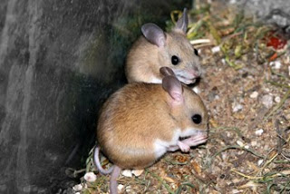

Ratonas lesbianas, hermafroditas protandros y cosas que contradicen la “Ley natural” evocada por la Iglesia
Tras la aprobación del matrimonio homosexual y la adopción de menores por parte de parejas del mismo sexo en México la ICAR respondió con ira. Recurrir al argumento de que la homosexualidad es “antinatural” y que estas parejas no pueden ser reconocidas como familias se han repetido en todos los arzobispados.
Sin embargo, una cosa es que algo sea común, o que estadísticamente se de con mayor frecuencia como ser heterosexual, diestro y con ambos ojos del mismo color, y otra, que es que sea algo “antinatural”.
La homosexualidad es natural, si con ello nos referimos a que se da en la naturaleza. Se tiene documentados casos de homosexualidad en leones, bisontes, gansos, gaviotas y decenas de vertebrados más. Incluso el chimpancé pigmeo Pan paniscus, nuestro pariente más cercano (junto con el chimpancé común) es 100% bisexual.
Pero junto con la homosexualidad hay otras características poco comunes, tales como ser zurdo, tener diferente pigmentación en cada uno de los ojos, o ser albino.
Durante siglos se intentó corregir a los zurdos. A estos se les amarraba la mano izquierda para que se acostumbraran a escribir con la derecha. La izquierda era relacionada con lo malo. La palabra “siniestro” viene de tal concepción. Muchas veces al zurdo se le tachó de maligno o diabólico.
Pero ahora esto ha cambiado. Nadie cree que ser zurdo es cosa del demonio, o que hay que intentar hacer una “terapia reparadora”, como intentan hacer con los homosexuales. El respeto y aceptación de los zurdos se hizo sin necesidad de asociaciones de zurdos, marchas o proyectos de ley. Sin embargo, en el caso de los homosexuales es diferente. La orientación sexual toca el tabú del sexo, razón por la que las cosas han sido más lentas y polémicas en cuanto a los derechos LGBT.
De igual manera como la conquista de los derechos de las mujeres (educación, voto y posibilidad de divorcio y aborto en ciertas circunstancias) se alcanzaron luchando contra las religiones, los derechos de gays y lesbianas tienen la lucha con la religión.

Pero para mostrarle a los religiosos que la homosexualidad no es está por fuera de la naturaleza, quiero referirme a un estudio realizado por el Instituto Coreano de Ciencia y Tecnología (KAIST por sus siglas en inglés). En este demostraron que tan solo removiendo un gen, el FucM, que rastrea los niveles de estrógenos se logró que ratonas mostraran atracción por otras ratonas. El doctor Chankyu Park dijo que “La hembra de ratón mutante sufrió un lígero cambio en el desarrollo del cerebro para parecerse al cerebro masculino en términos de preferencia sexual”.
Si bien no podemos afirmar que la homosexualidad humana se deba a un único gen, si podemos decir que la posibilidad de un factor genético ha estado cada vez más aceptada, a la vez que las ideas de Freud se dejan como reliquias del pasado.
Quiero aclarar también que en caso de ser la homosexualidad producida por algunos genes, no hay tampoco motivo de generar discriminación. Todos los humanos poseemos genes mutantes respecto a nuestros simiescos antepasados. Cada alelo nuevo nace de la mutación de un gen. Digo esto ya que el término “mutación” y “mutante” es tomado negativamente por fuera de los círculos de biólogos y médicos.
Sin embargo, la opinión de la Iglesia Católica está hoy por hoy más llena de argumentos “antinatura” y “contra natura” que en tiempos de Tomás de Aquino. Decía recientemente Monseñor Alberto Suarez Inda, Arzobispo de Morelia (México) “querer cambiar la ley natural es ir contra el designio del Creador”. Pero, ¿Cuál ley natural? La homosexualidad está tan establecida en el reino animal que no podemos decir que este fuera de ella. Incluso en la naturaleza hay casos de cambio de sexo, como el del pez payaso, Amphiprion ocellaris, famoso por la película “Buscando a Nemo”.
Los peces payaso son hermafroditas protandros, lo que significa que comienzan su vida como machos y luego pueden convertirse en hembras. El pez payaso nace con los órganos sexuales del macho y la hembra. Generalmente, un grupo de peces payaso viven en la misma anémona o en distintas anémonas que crecen juntas. El pez más grande del grupo es una hembra y el que le sigue en tamaño es un macho. Todos los demás peces payaso son asexuados, que quiere decir que no poseen órganos sexuales activos de ninguno de los dos sexos. Si la hembra muere, el macho cambia de sexo y el pez payaso asexuado más grande desarrolla órganos sexuales masculinos activos para reemplazarlo.
¿Qué artículo o claúsula de la “ley natural” explica el caso de los peces payaso? ¿Podría explicar esto Monseñor Suarez Inda o cualquiera de los travestidos curas, obispos y arzobispos?
Dejemos los argumentos de la ley natural en el medioevo, junto con el aquinate y su pérfida iglesia, y aproximemonos a la realidad de la homosexualidad, bisexualidad y la transexualidad desde una óptica humanista, respetuosa y teniendo en cuenta los descubrimientos de la ciencia.
Parece ser que los zurdos, homosexuales y albinos no serán la mayoría pero siempre estarán entre la especie humana, no como seres inferiores, sino como parte de la diversidad humana.
Volver al índice de artículos
Comentarios
Comments powered by Disqus